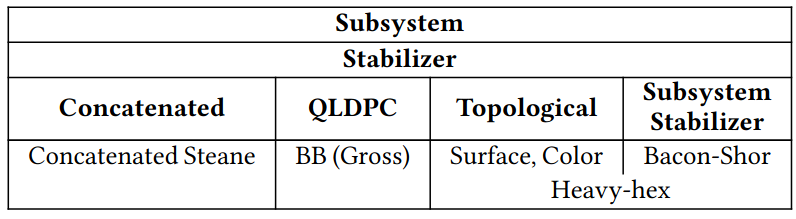
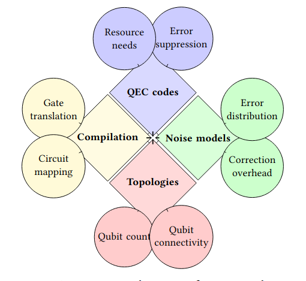

Research Scope
Our investigation is structured around four key dimensions that influence QEC performance, ensuring comprehensive coverage of the practical aspects of compilation and execution.
QEC Code Taxonomy
To enable a fair evaluation, we organize QEC codes into four main families based on their core principles. For our study, we select representative codes from each major family as high-performing exemplars.

Figure: Taxonomy of Quantum Error Correction Codes.
1. Subsystem Stabilizer Codes
Generalize stabilizer codes by encoding information into a subsystem, using gauge qubits to simplify syndrome extraction.
Selected: Bacon-Shor code.
2. Topological Codes
Encode information in global lattice features, making them robust against local errors. Distance grows with lattice size.
Selected: Rotated Surface code, Triangular Color code.
3. QLDPC Codes
Stabilizer codes with sparse parity-check matrices, maintaining a constant encoding rate as the distance grows.
Selected: Gross code (Bivariate Bicycle).
4. Concatenated Codes
Encode information by nesting one code within another, allowing flexible combinations for error suppression.
Selected: Concatenated Steane code.
Architecture-Specific Codes
Designed to combine different characteristics to meet the constraints of specific quantum hardware (e.g., heavy-hex topology).
Selected: Heavy-hexagon code (IBM).
Research Axes (Dimensions)
We systematically explore the parameter space along four axes:

Figure: The four key dimensions (axes) of our research scope.
- QEC Codes: Representative codes from all major families selected using our taxonomy.
- QPU Noise Models: Both ideal models and realistic models derived from current and next-generation devices (Willow, Apollo, Flamingo).
- QPU Topologies: Layouts varying in qubit count and connectivity, from abstract grids to complex hardware architectures.
- Quantum Compilation: Impact of different compilers and internal stages like mapping, routing, and translation.
Research Questions
Our study addresses nine targeted research questions:
- RQ#1: Does a QEC code's effectiveness change as its distance increases?
- RQ#2: Does higher qubit connectivity always improve the effectiveness of QEC codes?
- RQ#3: Is mean qubit quality enough to characterize expected error rates in heterogeneous devices, or does variance play a critical role?
- RQ#4: Does the effectiveness of a QEC code scale across the QPUs of a distributed architecture similar to single-QPU execution?
- RQ#5: Which quantum technologies are most suitable for effective error correction, given their error rates and hardware restrictions?
- RQ#6: How do the mapping and routing compilation stages influence the effectiveness of QEC codes?
- RQ#7: How does the translation stage influence the effectiveness of QEC codes?
- RQ#8: Which decoders achieve the best performance across QEC code families?
- RQ#9: Is the application of QEC always beneficial, or are there regimes in which QEC introduces more noise than it suppresses?